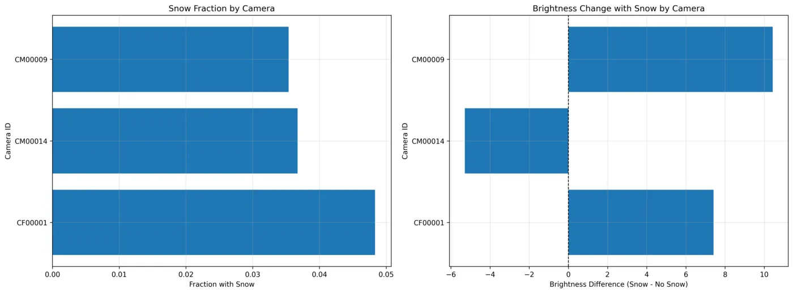
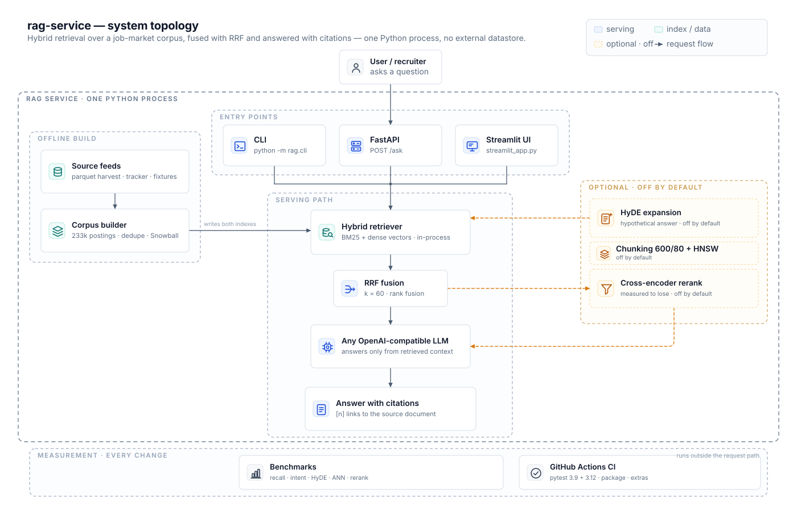
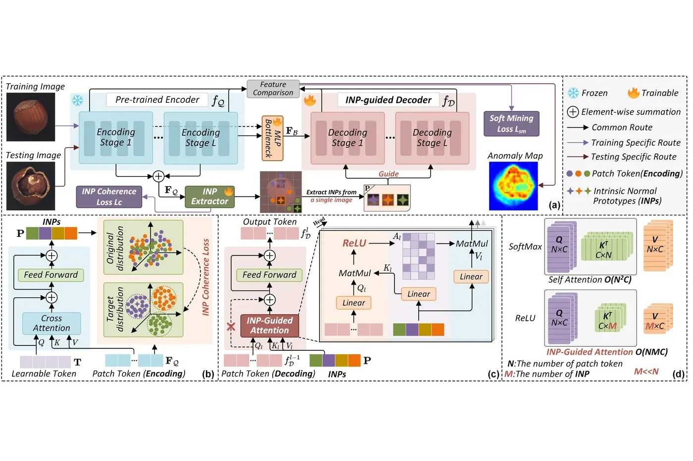
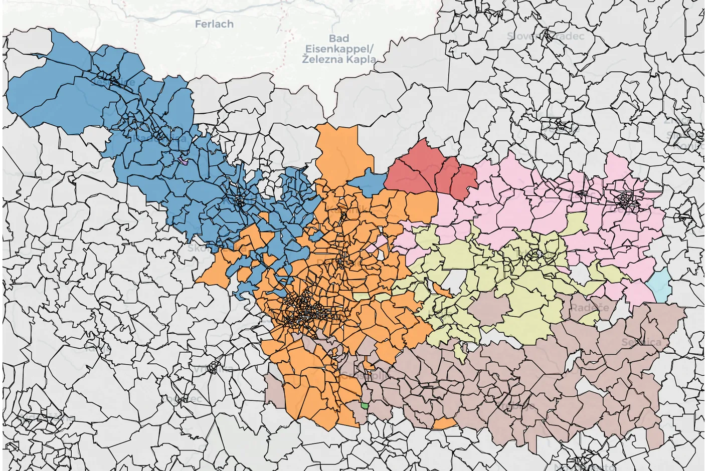
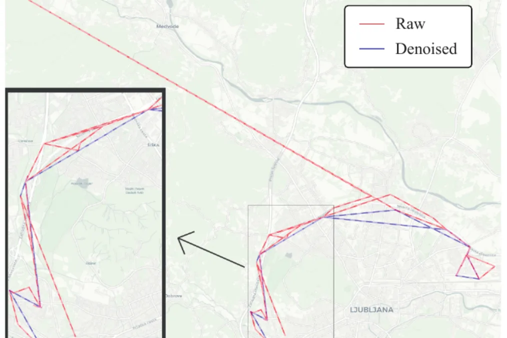
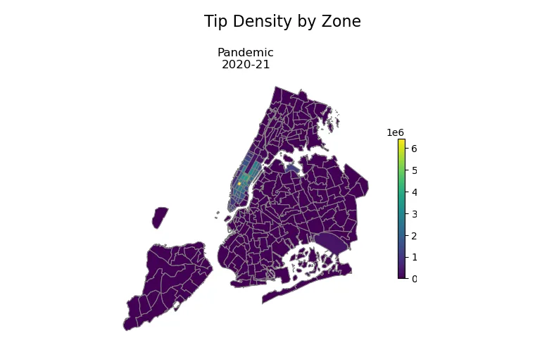

snowy
Snow-cover estimation from 12 camera stations in the Pyrenees: 0.90 mIoU and +0.10 AUROC over the baseline. First-author paper under review at Computers & Geosciences; best presentation award, Ljubljana.



Barcelona · available immediately
Data scientist and AI engineer by training, generalist by trade: pipelines, computer-vision models, retrieval systems, and the dashboard that puts the result in front of someone.
I work across the chain: pipelines and warehouses, computer-vision and time-series models, retrieval systems, and the dashboards that put the result in front of someone.
Chemical engineer first, so I ask what the number means before I ask whether the model is clever. Most of my work ends with a table: configurations, a labelled evaluation set, and a hit rate that someone else can reproduce.
Snow-cover estimation from 12 camera stations in the Pyrenees: 0.90 mIoU and +0.10 AUROC over the baseline. First-author paper under review at Computers & Geosciences; best presentation award, Ljubljana.

A job-market warehouse: 233k postings from 11 applicant-tracking systems, deduplicated on keys that are not unique, modelled into a star schema with dbt, with SQL marts and a dashboard generated from the data itself. Tests fail the build when a rule breaks.

Retrieval over the same corpus, answering with citations. Every configuration is benchmarked on 15 labelled questions, and the README reports the ones that lost.
| Retriever | hit@1 | MRR |
|---|---|---|
| BM25 | 0.850 | 0.850 |
| Hybrid (RRF) | 0.802 | 0.763 |
| Dense only | 0.600 | 0.567 |


Reproduction and extension of a CVPR 2025 anomaly-detection method: the experiments of the original paper re-run, then LoRA fine-tuning, ONNX export and FLOPs profiling on top.


Transport-mode inference from cellular network data, for the FRI Data Science competition (Slovenia): features per subscriber-hour, then an HMM over the sequence rather than a label per point.



A paper registry of chemical retailers, normalised and joined to notified poisoning cases, turned into a map by municipality that a small team used to decide where to inspect.

End-to-end analysis of New York City TLC trip records: preparation, scalable processing, and the results written up — the project where I learned to stop loading everything into memory.


2024
Bogotá, Colombia
Digitised and normalised the registry of chemical retailers, joined it to health surveillance records, and produced the municipality-level picture that replaced equal-share inspection planning.
2024–25
Project-based
Feasibility studies for waste-to-energy and biogas projects: mass and energy balances, equipment sizing, process economics, and vendor documentation checked against specification.
2024–26
Universitat Pompeu Fabra, Barcelona · University of Ljubljana · 8.54/10
Thesis graded 10/10: snow-cover segmentation from camera imagery for a national meteorological service.
2023
Universidad de los Andes, Bogotá · 3.86/5.0
Languages
Data
Machine learning
Engineering
Hiring, or building something in data? Send it over.
If you are hiring or collaborating, send a message — it reaches my inbox directly.